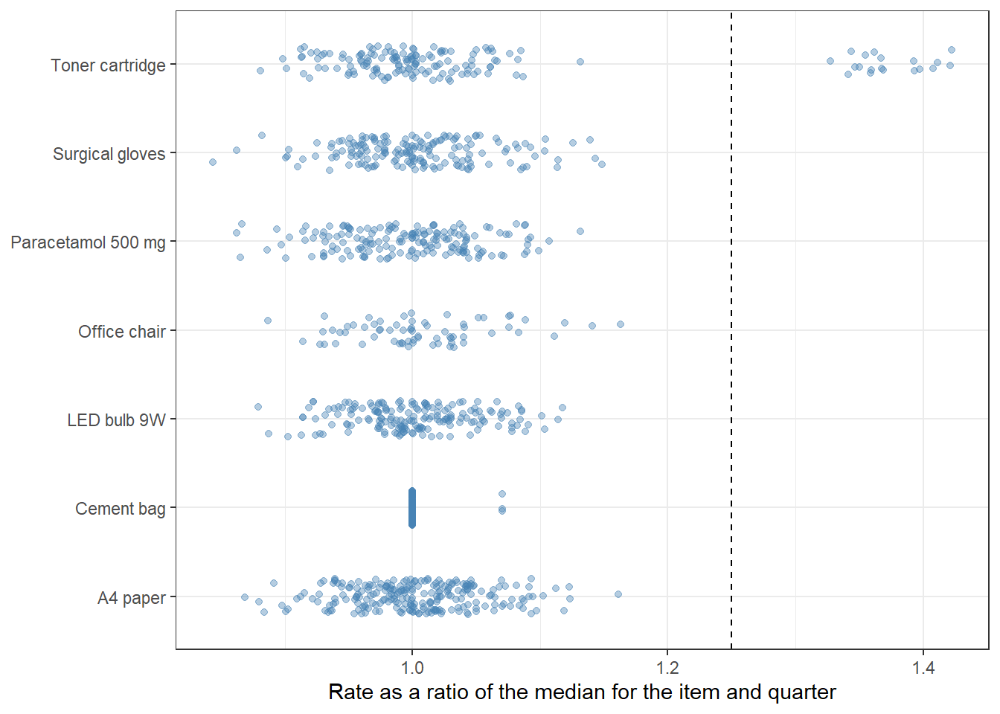
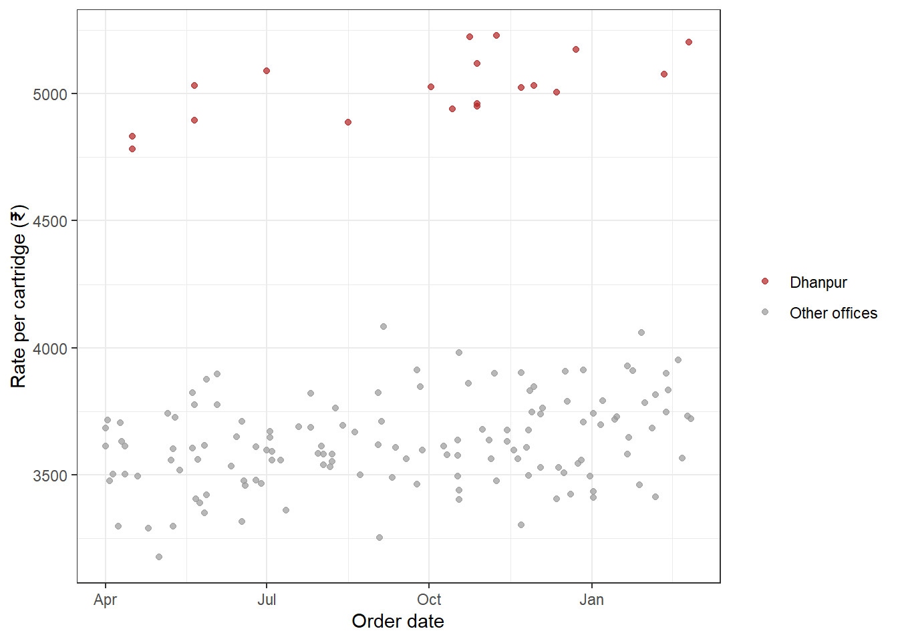

64 Payables and Vendors
A State Directorate of Health Services buys paper, toner, bulbs, cement, chairs and medicines for its eight district offices. Each office raises orders, receives the goods, accepts the bills and pays the vendors. Thousands of payments go out in a year. Most are routine. A few are not. A vendor’s bank account is changed for twelve days, just long enough for one large payment. A firm is registered on a Monday and paid on the following Monday. One office pays almost 40% more than its neighbours for the same toner cartridge, month after month. None of this shows in a payment register read line by line.
Payables are where an organisation’s money leaves it. So they attract both error and fraud. Earlier chapters of this book already hold many tests that apply here. They find duplicate invoices, bills split below a limit, look-alike vendor names and links between employees and vendors. This chapter brings those tests together for one department’s payables, in a few lines each. It then adds the classic payables tests that the book has not yet covered. These are a review of the vendor master and its change log, and the three-way match of order, receipt and invoice. They also include price benchmarking of the same item across offices and months. Finally it combines the flags into a view of each vendor, and follows two cases to the end.
As in every chapter of this part, a flag is not a finding. Most flagged items will have a good reason. The aim is to find the few that need a question.
This chapter uses tidyverse and stringdist. If they are missing, install them with the command below. Section C.2 lists the packages of every part.
install.packages(c("tidyverse", "stringdist"))Prerequisites
64.1 The purchase-to-pay cycle
Every purchase passes through the same steps. Auditors call them the purchase-to-pay cycle. Each step leaves a record, and each record can be checked against the others.
| Step | Record | What can go wrong |
|---|---|---|
| 1. A vendor is registered | Vendor master, and its change log | Fictitious vendors, duplicate vendors, bank details changed to divert a payment |
| 2. The office orders the goods | Purchase order | Buying without an order, or at an inflated rate |
| 3. The goods arrive | Goods receipt | Short or no delivery |
| 4. The vendor sends a bill | Invoice | Billing more than was delivered, or above the agreed rate, or twice |
| 5. The office pays | Payment | Paying before delivery, paying the wrong account, paying twice |
The flow is simple. Vendor, then order, then receipt, then invoice, then payment. The controls are simple too. Nobody should be paid unless the vendor is genuine, the goods were ordered, the goods arrived, and the bill matches both. The tests in this chapter check each of these, for every transaction.
64.2 Our data, the payables of a State health directorate
Our auditee is an imaginary Directorate of Health Services of a State, with eight district offices. We have its purchase and payment records for 2024-25. All names, firms and numbers are made up. There are nine tables.
-
vendorsis the vendor master. Each vendor has an id, a name, a PAN, a GSTIN, a bank account, an address and the date it was registered. -
vendor_changesis the change log of the vendor master. It records each change of bank account, with the old and new values, the date and the user who made it. -
employeesis the employee master, with each employee’s office, designation, PAN, bank account and address. -
purchase_ordershas one row for each order. To keep the example simple, each order is for one item, with a quantity and a rate. With several lines in an order, the same joins work on the order number and the line number. -
receiptshas one row for each delivery.challan_dateis the date on the vendor’s delivery challan, when the goods arrived.grn_dateis the date the store entered the goods receipt note in the system. Some orders arrive in two deliveries. -
invoiceshas one row for each bill, with the order it refers to, the quantity, the rate and the amount. Rates include tax. -
paymentshas one row for each payment, with the bank account it was paid into. Bills are paid in full, without deductions, to keep the example simple. -
past_paidholds the total paid to each vendor in each of the three earlier years, from the old accounting system. -
rate_contractholds the State rate contract for cement, andbank_totalsthe monthly total of payments in the department’s bank statement.
Most of the data is routine. Offices buy from two or three regular vendors for each item. Prices differ a little by office, since remote offices pay more for transport. Large orders get a better rate, and prices rise slowly through the year. Some vendors changed their bank accounts for good reasons. Some goods receipts were entered in the system a few days late. Into this, these cases have been planted.
- A bank account changed around a large payment. Narmada Office Solutions, a regular supplier of paper, has its account changed three days before a large payment, and changed back nine days after it.
- A vendor paid within a week of registration. Trinetra Medical Agencies is registered, given an order, and paid within seven days. It has no GSTIN, and it is paid large sums over the following months.
- A dormant vendor wakes up. Gomti Furniture House was last paid three years ago. In February 2025 it receives large orders of chairs.
- A duplicate vendor. Maa Durga Medical Agency is registered with the same PAN as Maa Durga Medical Agencies, a slightly different name, and a different bank account.
- A vendor sharing a bank account with an employee. Sagar Lighting House is paid into the account of an employee of the Madhopur office.
- A GSTIN that fails its check. One character of the GSTIN of Pragati Paper Mart is wrong.
- Breaks in the three-way match. Invoices with no order, invoices dated before the order, more billed than received, rates billed above the order, payments made before the goods arrived, and orders received in part but paid in full.
- One office paying more. The Dhanpur office buys toner cartridges from one vendor at about 40% above what other offices pay.
There are a few more, which the tests of earlier chapters will find. Let us build the data.
Code to create the payables data
set.seed(2425)
offices <- c("Rampur", "Keshavnagar", "Sitapur", "Bhawanipur", "Chandgarh", "Dhanpur",
"Madhopur", "Ratanpur")
# Remote offices pay a little more, for transport
office_factor <- c(Rampur = 1, Keshavnagar = 1.02, Sitapur = 1.04, Bhawanipur = 1,
Chandgarh = 1.06, Dhanpur = 1.03, Madhopur = 1.05, Ratanpur = 1.08)
items <- tribble(
~item, ~unit, ~base_rate, ~qty_mean, ~trade,
"A4 paper", "ream", 265, 150, "Stationery",
"Toner cartridge", "piece", 3400, 12, "Stationery",
"LED bulb 9W", "piece", 96, 300, "Electrical",
"Cement bag", "bag of 50 kg", 380, 250, "Building",
"Office chair", "piece", 5200, 10, "Furniture",
"Paracetamol 500 mg", "strip of 10", 18, 4000, "Medical",
"Surgical gloves", "box of 100", 420, 80, "Medical"
)
# ---- Vendor master ----
first <- c("Shri Ganesh", "Shiv Shakti", "Kaveri", "Vindhya", "Sai Krupa", "Jai Ambe", "Navin",
"Pragati", "Unnati", "Sagar", "Himalaya", "Gomti", "Ashoka", "Kamal", "Suraj", "Chandan",
"Ganga", "Yamuna", "Satpura", "Aravali", "Nilgiri", "Saraswati", "Lakshmi", "Prakash",
"Deep", "Jyoti", "Anand", "Mangal", "Shubham", "Vardhman", "Krishna", "Gopal", "Mahavir",
"Nandan", "Kirti", "Sunrise", "Evergreen", "Pioneer", "Supreme", "Royal", "Classic",
"Modern", "National", "City", "Star", "Diamond", "Golden", "Silver", "Tirupati", "Om")
suffix <- list(Stationery = c("Stationers", "Paper Mart", "Office Supplies", "Computer Supplies"),
Electrical = c("Electricals", "Electric Stores", "Lighting House"),
Building = c("Cement Depot", "Building Materials", "Hardware Stores"),
Furniture = c("Furniture House", "Furnishers", "Steel Furniture"),
Medical = c("Medical Agencies", "Pharma Distributors", "Surgicals", "Medicos"))
trade_mix <- c(Stationery = 50, Electrical = 30, Building = 30, Furniture = 25, Medical = 45)
v_trade <- rep(names(trade_mix), trade_mix)
v_name <- character(length(v_trade))
taken <- c("Gomti Furniture House", "Kaveri Electricals", "Sagar Lighting House", "Pragati Paper Mart",
"Unnati Computer Supplies", "Jai Ambe Cement Depot", "Shiv Shakti Steel Furniture")
for (i in seq_along(v_trade)) {
repeat {
nm <- paste(sample(first, 1), sample(suffix[[v_trade[i]]], 1))
if (!nm %in% c(v_name, taken)) break
}
v_name[i] <- nm
}
towns <- c(offices, "Rajdhani Nagar")
markets <- c("Gandhi Market", "Station Road", "Sadar Bazar", "Civil Lines", "Nehru Chowk",
"Industrial Area", "Main Road", "Subhash Marg", "Tilak Nagar", "Kotwali Road")
gst_chars <- c(0:9, LETTERS)
gstin_check_char <- function(first14) {
v <- match(strsplit(first14, "")[[1]], gst_chars) - 1
p <- v * rep(c(1, 2), 7)
total <- sum(p %/% 36 + p %% 36)
gst_chars[((36 - total %% 36) %% 36) + 1]
}
make_pan <- function(name, holder) {
paste0(paste(sample(LETTERS, 3, TRUE), collapse = ""), holder, substr(name, 1, 1),
sprintf("%04d", sample(1000:9999, 1)), sample(LETTERS, 1))
}
make_gstin <- function(pan, entity = "1") {
f14 <- paste0("22", pan, entity, "Z")
paste0(f14, gstin_check_char(f14))
}
make_acct <- function(n) paste0(sample(c("3104", "5021", "6620", "1187"), n, TRUE),
sprintf("%08d", sample(1e7:99999999, n)))
make_addr <- function(n, prefix = "Shop No.") paste0(prefix, " ", sample(1:120, n, TRUE), ", ",
sample(markets, n, TRUE), ", ",
sample(towns, n, TRUE, prob = c(rep(1, 8), 3)))
nv <- length(v_name)
holder <- sample(c("C", "F", "P"), nv, TRUE, prob = c(0.25, 0.45, 0.30))
vendors <- tibble(
key = seq_len(nv), vendor_name = v_name, trade = v_trade,
pan = map2_chr(v_name, holder, make_pan),
bank_account = make_acct(nv),
address = expand_grid(no = 1:150, m = markets, t = towns) |>
mutate(a = paste0("Shop No. ", no, ", ", m, ", ", t)) |>
filter(!no %in% c(2, 5, 7, 9, 14, 18, 27, 33, 45, 61, 80)) |>
slice_sample(n = nv) |> pull(a),
created_on = as.Date("2014-04-01") + sample(0:3500, nv, TRUE)
) |>
mutate(gstin = map_chr(pan, make_gstin))
# A few vendors registered in the year
new_keys <- sample(which(vendors$trade != "Furniture"), 11)
vendors$created_on[new_keys] <- as.Date("2024-04-15") + sample(0:240, 11)
# ---- Planted vendors (added to the master) ----
pv <- tribble(
~vendor_name, ~trade, ~holder, ~address, ~created_on,
"Narmada Office Solutions", "Stationery", "F", "Plot 14, Industrial Area, Rajdhani Nagar", "2016-05-10",
"Trinetra Medical Agencies", "Medical", "P", "House No. 61, Tilak Nagar, Ratanpur", "2024-11-04",
"Vindhya Health Distributors", "Medical", "F", "Shop No. 9, Sadar Bazar, Keshavnagar", "2024-08-12",
"Gomti Furniture House", "Furniture", "F", "Shop No. 33, Main Road, Bhawanipur", "2015-09-21",
"Maa Durga Medical Agencies", "Medical", "F", "Shop No. 7, Station Road, Sitapur", "2017-02-14",
"Maa Durga Medical Agency", "Medical", "F", "Shop 7, Station Rd, Sitapur", "2024-06-20",
"Kaveri Electricals", "Electrical", "C", "Plot 3, Industrial Area, Rajdhani Nagar", "2015-01-12",
"Kaveri Electricals", "Electrical", "C", "Shop No. 18, Gandhi Market, Chandgarh", "2021-07-05",
"Sagar Lighting House", "Electrical", "P", "Shop No. 45, Nehru Chowk, Madhopur", "2019-03-11",
"Pragati Paper Mart", "Stationery", "F", "Shop No. 2, Kotwali Road, Rampur", "2018-10-01",
"Unnati Computer Supplies", "Stationery", "F", "Shop No. 27, Civil Lines, Dhanpur", "2018-06-15",
"Jai Ambe Cement Depot", "Building", "F", "Shop No. 80, Main Road, Chandgarh", "2016-12-01",
"Shiv Shakti Steel Furniture", "Furniture", "F", "Shop No. 5, Subhash Marg, Madhopur", "2017-08-08"
) |>
mutate(key = nv + row_number(), created_on = as.Date(created_on),
pan = map2_chr(vendor_name, holder, make_pan),
bank_account = make_acct(n()))
pv$pan[6] <- pv$pan[5] # same PAN, variant name
pv$pan[8] <- pv$pan[7] # same PAN, second registration
pv$bank_account[8] <- pv$bank_account[7]
pv <- pv |> mutate(gstin = map2_chr(pan, c(rep("1", 7), "2", rep("1", 5)), make_gstin))
pv$gstin[2] <- NA # new vendor, no GSTIN
g <- pv$gstin[10] # one character typed wrongly
substr(g, 9, 9) <- if (substr(g, 9, 9) == "4") "7" else "4"
pv$gstin[10] <- g
vendors <- bind_rows(vendors, select(pv, -holder))
pk <- set_names(pv$key, c("bank", "newfast", "newok", "dormant", "durga", "durga2", "kaveri1",
"kaveri2", "sagar", "pragati", "unnati", "jaiambe", "shivshakti"))
# Vendor ids in a random order, so that planted vendors are not at the end
vendors <- vendors |>
mutate(vendor_id = sprintf("V%03d", sample(101:(100 + n())))) |>
arrange(vendor_id)
vid <- function(k) vendors$vendor_id[match(k, vendors$key)]
# ---- Employee master ----
fn <- c("Amit", "Sunita", "Rakesh", "Pooja", "Vijay", "Neha", "Suresh", "Kavita", "Manoj", "Rekha",
"Deepak", "Anita", "Rajesh", "Meena", "Sanjay", "Priya", "Ashok", "Seema", "Ramesh", "Geeta")
ln <- c("Verma", "Sharma", "Yadav", "Singh", "Gupta", "Mishra", "Patel", "Tiwari", "Chauhan",
"Pandey", "Jain", "Saxena", "Dubey", "Rawat", "Thakur")
ne <- 320
employees <- tibble(
emp_id = sprintf("E%04d", sample(1001:1999, ne)),
emp_name = paste(sample(fn, ne, TRUE), sample(ln, ne, TRUE)),
office = sample(c(offices, "Directorate"), ne, TRUE),
designation = sample(c("Clerk", "Senior Clerk", "Store keeper", "Accountant", "Pharmacist",
"Junior Engineer", "Medical Officer", "Staff Nurse", "Driver"), ne, TRUE),
bank_account = make_acct(ne)
) |>
mutate(pan = map_chr(emp_name, \(x) make_pan(word(x, 2), "P")),
address = paste0("House No. ", sample(1:400, ne, TRUE), ", ",
sample(c("Shastri Colony", "Ram Nagar", "Vikas Puri", "Officers Colony",
"Indira Nagar", "Ward No. 6"), ne, TRUE), ", ",
if_else(office == "Directorate", "Rajdhani Nagar", office))) |>
arrange(emp_id)
# Planted. The vendor Sagar Lighting House is paid into an employee's account
emp_link <- which(employees$office == "Madhopur" & employees$designation != "Driver")[1]
employees$designation[emp_link] <- "Junior Engineer"
vendors$bank_account[vendors$key == pk["sagar"]] <- employees$bank_account[emp_link]
# ---- Purchase orders ----
fy_days <- seq(as.Date("2024-04-01"), as.Date("2025-02-28"), by = "day")
work <- fy_days[!weekdays(fy_days) %in% c("Saturday", "Sunday")]
# each office buys each item from two or three regular vendors of the trade
regular <- vendors |> filter(!key %in% pv$key | key %in% pk[c("bank", "kaveri1", "pragati", "unnati",
"jaiambe", "shivshakti", "durga", "sagar")])
supply <- expand_grid(office = offices, item = items$item) |>
left_join(select(items, item, trade), by = "item") |>
mutate(vkeys = map2(trade, office, \(t, o) {
pool <- regular |> filter(trade == t, created_on < as.Date("2024-04-01") | key %in% vendors$key[vendors$key %in% new_keys])
sample(pool$key, 3)
}))
# Planted vendors that must be regular suppliers somewhere
fix_v <- function(o, it, k) supply$vkeys[[which(supply$office == o & supply$item == it)]][1] <<- k
fix_v("Rampur", "A4 paper", pk["bank"]); fix_v("Keshavnagar", "A4 paper", pk["bank"])
fix_v("Madhopur", "LED bulb 9W", pk["sagar"]); fix_v("Chandgarh", "LED bulb 9W", pk["kaveri1"])
fix_v("Rampur", "A4 paper", pk["pragati"]); supply$vkeys[[which(supply$office == "Rampur" & supply$item == "A4 paper")]][2] <- pk["bank"]
fix_v("Dhanpur", "Toner cartridge", pk["unnati"]); fix_v("Chandgarh", "Cement bag", pk["jaiambe"])
fix_v("Sitapur", "Surgical gloves", pk["durga"]); fix_v("Madhopur", "Office chair", pk["shivshakti"])
n_po <- 1050
po <- tibble(po_date = sort(sample(work, n_po, TRUE)),
office = sample(offices, n_po, TRUE),
item = sample(items$item, n_po, TRUE, prob = c(3, 2, 2, 1.5, 1, 2, 2))) |>
left_join(items, by = "item") |>
mutate(vkey = map2_int(office, item, \(o, it) {
ks <- supply$vkeys[[which(supply$office == o & supply$item == it)]]
sample(ks, 1, prob = c(0.5, 0.3, 0.2))
}),
qty = pmax(round(qty_mean * rlnorm(n(), 0, 0.5)), 2),
# bigger orders get a better price, and prices rise a little through the year
qty_effect = case_when(qty > 1.8 * qty_mean ~ 0.95, qty < 0.5 * qty_mean ~ 1.06, .default = 1),
trend = 1 + 0.05 * as.numeric(po_date - as.Date("2024-04-01")) / 365,
rate = round(base_rate * office_factor[office] * qty_effect * trend * rnorm(n(), 1, 0.035), 2))
# A vendor registered during the year cannot get an order before it exists
early <- which(po$po_date < vendors$created_on[match(po$vkey, vendors$key)])
for (j in early) {
ks <- supply$vkeys[[which(supply$office == po$office[j] & supply$item == po$item[j])]]
ok <- ks[vendors$created_on[match(ks, vendors$key)] <= po$po_date[j]]
po$vkey[j] <- if (length(ok) > 0) ok[1] else sample(regular$key[regular$trade == po$trade[j] &
regular$created_on < as.Date("2024-04-01")], 1)
}
# Cement is on a State rate contract, with a lower rate from 1 October 2024
rate_contract <- tibble(item = "Cement bag", effective_from = as.Date(c("2024-04-01", "2024-10-01")),
contract_rate = c(380, 355))
po <- po |>
mutate(rate = if_else(item == "Cement bag",
if_else(po_date < as.Date("2024-10-01"), 380, 355), rate))
# Planted. Dhanpur buys toner from Unnati Computer Supplies at about 40% above the usual price
idx <- which(po$office == "Dhanpur" & po$item == "Toner cartridge")
po$vkey[idx] <- pk["unnati"]
po$rate[idx] <- round(3400 * runif(length(idx), 1.40, 1.50) * po$trend[idx], 2)
# Planted. Chandgarh keeps ordering cement at the old contract rate after the rate was lowered
idx <- which(po$office == "Chandgarh" & po$item == "Cement bag" & po$po_date >= as.Date("2024-10-01"))
po$rate[idx[seq_len(min(3, length(idx)))]] <- 380
add_po <- function(d, o, it, k, q, r) {
tibble(po_date = as.Date(d), office = o, item = it, vkey = k, qty = q, rate = r) |>
left_join(items, by = "item")
}
extra <- bind_rows(
# Planted. Four LED orders at Madhopur, each just below Rs 2.5 lakh, within nine days
add_po(c("2024-12-02", "2024-12-04", "2024-12-09", "2024-12-11"), "Madhopur", "LED bulb 9W",
pk["sagar"], c(2450, 2380, 2490, 2420), 99.5),
# Planted. The new vendor, ordered from on the day after it was created, and later
add_po(c("2024-11-05", "2024-11-25", "2024-12-16", "2025-01-13", "2025-02-03"), "Ratanpur",
"Surgical gloves", pk["newfast"], c(900, 1400, 2000, 1800, 2000), c(452, 455, 455, 458, 460)),
# The genuine new vendor, an urgent purchase during a fever outbreak
add_po(c("2024-08-13", "2024-09-10", "2024-10-22"), "Keshavnagar", "Paracetamol 500 mg",
pk["newok"], c(60000, 30000, 25000), c(17.9, 18.1, 18.2)),
# Planted. A dormant vendor wakes up with large orders of chairs
add_po(c("2025-02-10", "2025-02-24", "2025-03-05"), "Bhawanipur", "Office chair",
pk["dormant"], c(160, 140, 120), c(5350, 5380, 5400)),
# The variant Maa Durga vendor gets orders at Sitapur too
add_po(c("2024-07-15", "2024-09-30", "2024-12-20"), "Sitapur", "Surgical gloves",
pk["durga2"], c(90, 110, 85), c(431, 433, 436)),
# The second Kaveri registration supplies Chandgarh
add_po(c("2024-06-05", "2024-10-14", "2025-01-20"), "Chandgarh", "LED bulb 9W",
pk["kaveri2"], c(400, 350, 500), c(99, 100, 101)),
# More regular orders of two vendors
add_po(c("2024-05-06", "2024-07-22", "2024-09-02", "2024-11-18", "2025-01-27"), "Chandgarh", "Cement bag",
pk["jaiambe"], c(300, 250, 320, 280, 300), c(380, 380, 380, 355, 355)),
add_po(c("2024-06-17", "2024-08-26", "2024-11-04", "2025-01-06"), "Madhopur", "Office chair",
pk["shivshakti"], c(12, 8, 15, 10), c(5450, 5480, 5520, 5560)),
# Narmada, a large order of paper before the bank change
add_po("2024-12-23", "Rampur", "A4 paper", pk["bank"], 5200, 262)
)
po <- bind_rows(po, extra) |>
arrange(po_date) |>
mutate(po_no = sprintf("PO/24-25/%04d", row_number()), vendor_id = vid(vkey))
# ---- Goods receipts ----
grn <- po |>
mutate(lag = sample(4:20, n(), TRUE), split = runif(n()) < 0.1 & qty >= 10 & !vkey %in% pv$key) |>
select(po_no, po_date, qty, lag, split, vkey, office, item)
grn <- bind_rows(
grn |> filter(!split) |> mutate(challan_date = po_date + lag, qty_received = qty),
grn |> filter(split) |> mutate(challan_date = po_date + lag, qty_received = round(qty * 0.6)),
grn |> filter(split) |> mutate(challan_date = po_date + lag + sample(7:15, n(), TRUE),
qty_received = qty - round(qty * 0.6))
) |>
mutate(grn_date = challan_date + sample(c(0, 0, 0, 1, 1, 2), n(), TRUE))
# ---- Invoices, one per order, raised with the (last) delivery ----
inv <- grn |>
summarise(qty_received = sum(qty_received), last_challan = max(challan_date),
last_grn = max(grn_date), .by = po_no) |>
left_join(select(po, po_no, po_date, vendor_id, vkey, office, item, qty, rate), by = "po_no") |>
mutate(inv_date = last_challan + sample(0:3, n(), TRUE), inv_qty = qty, inv_rate = rate)
# Planted. Quantity billed above quantity received, cement of Jai Ambe Cement Depot
idx <- which(inv$vkey == pk["jaiambe"])
idx <- idx[round(seq(2, length(idx), length.out = 4))]
short <- c(40, 35, 50, 30)
grn$qty_received[match(inv$po_no[idx], grn$po_no)] <- inv$qty[idx] - short
# Planted. Price billed above the order price, Shiv Shakti Steel Furniture
idx <- which(inv$vkey == pk["shivshakti"])[1:3]
inv$inv_rate[idx] <- round(inv$rate[idx] * c(1.12, 1.15, 1.10), 2)
# Planted. Invoice dated before the order
idx <- sample(which(!inv$vkey %in% pv$key), 4)
early_inv <- inv$po_no[idx]
inv$inv_date[idx] <- inv$po_date[idx] - sample(3:12, 4)
# Planted. Ordered in part, paid in full, the new medical vendor
idx <- which(inv$vkey == pk["newfast"])[c(3, 5)]
grn <- grn |> filter(!(po_no %in% inv$po_no[idx] & duplicated(po_no))) # keep one receipt
grn$qty_received[match(inv$po_no[idx], grn$po_no)] <- c(1200, 1100)
inv <- inv |>
mutate(inv_no = paste0(str_sub(str_remove_all(vendors$vendor_name[match(vkey, vendors$key)], "[^A-Z]"), 1, 3),
"/", sample(100:999, n(), TRUE)),
amount = round(inv_qty * inv_rate, 2))
# Planted. Invoices with no order, mostly from Jai Ambe Cement Depot
no_po <- tibble(vkey = pk[c(rep("jaiambe", 4), "kaveri1")], office = c(rep("Chandgarh", 4), "Chandgarh"),
item = c(rep("Cement bag", 4), "LED bulb 9W"),
inv_date = as.Date(c("2024-08-19", "2024-11-07", "2025-01-16", "2025-02-27", "2024-10-03")),
inv_qty = c(300, 280, 320, 260, 150), inv_rate = c(380, 380, 355, 355, 104)) |>
mutate(vendor_id = vid(vkey), po_no = NA_character_,
inv_no = paste0(c("JAC", "JAC", "JAC", "JAC", "KE"), "/", sample(100:999, 5)),
amount = round(inv_qty * inv_rate, 2))
inv <- bind_rows(inv, no_po)
# ---- Payments ----
inv <- inv |>
mutate(pay_date = pmax(inv_date, coalesce(last_grn, inv_date)) + sample(6:35, n(), TRUE))
# Planted. Paid before the goods were received (chairs of the dormant vendor, and one more)
idx <- c(which(inv$vkey == pk["dormant"])[1:2],
sample(which(inv$item == "Toner cartridge" & !inv$vkey %in% pv$key & !inv$po_no %in% early_inv), 1))
paid_early <- inv$po_no[idx]
late <- c(12, 15, 9)
grn <- grn |>
mutate(rowid = row_number())
for (j in seq_along(idx)) {
r <- grn$rowid[grn$po_no == inv$po_no[idx[j]]]
inv$pay_date[idx[j]] <- inv$inv_date[idx[j]] + 2
grn$challan_date[r] <- inv$pay_date[idx[j]] + late[j]
grn$grn_date[r] <- grn$challan_date[r]
}
# Noise. Receipts entered in the system late, after payment, though goods came on time
idx <- sample(which(!inv$vkey %in% pv$key & !is.na(inv$po_no) & !inv$po_no %in% c(early_inv, paid_early) &
inv$pay_date < as.Date("2025-03-15")), 5)
for (j in idx) {
r <- grn$rowid[grn$po_no == inv$po_no[j]]
grn$grn_date[r] <- inv$pay_date[j] + sample(3:10, 1)
}
# The new vendor is paid fast
idx <- which(inv$vkey == pk["newfast"])
first_po <- inv$po_no[idx[1]]
grn$challan_date[grn$po_no == first_po] <- as.Date("2024-11-08")
grn$grn_date[grn$po_no == first_po] <- as.Date("2024-11-08")
inv$inv_date[idx[1]] <- as.Date("2024-11-08")
inv$pay_date[idx[1]] <- as.Date("2024-11-11")
inv$pay_date[idx[-1]] <- inv$inv_date[idx[-1]] + sample(3:6, length(idx) - 1, TRUE)
idx <- which(inv$vkey == pk["newok"])[1]
inv$pay_date[idx] <- as.Date("2024-08-17"); inv$inv_date[idx] <- as.Date("2024-08-14")
grn$challan_date[grn$po_no == inv$po_no[idx]] <- as.Date("2024-08-14")
grn$grn_date[grn$po_no == inv$po_no[idx]] <- as.Date("2024-08-14")
# Planted. The Maa Durga variant is paid an invoice already paid to the genuine vendor
dup_src <- inv |> filter(vkey == pk["durga"]) |> slice(2)
dup_row <- dup_src |>
mutate(vkey = pk["durga2"], vendor_id = vid(pk["durga2"]), po_no = NA_character_,
pay_date = dup_src$pay_date + 23)
inv <- bind_rows(inv, dup_row)
inv <- inv |>
arrange(inv_date) |>
mutate(inv_id = sprintf("INV%05d", row_number()))
# ---- Bank account changes ----
# Genuine changes, made once and kept
gk <- sample(unique(inv$vkey[!inv$vkey %in% pv$key]), 9)
changes <- tibble(vkey = gk, changed_on = sort(sample(work[work > as.Date("2024-05-01")], 9)),
new_value = vendors$bank_account[match(gk, vendors$key)],
old_value = make_acct(9),
changed_by = sample(c("DEO01", "DEO02", "DEO03"), 9, TRUE))
# Planted. Narmada's account changed three days before a large payment, and back nine days after
temp_acct <- make_acct(1)
nar_acct <- vendors$bank_account[vendors$key == pk["bank"]]
big_inv <- which(inv$vkey == pk["bank"] & inv$inv_qty == 5200)
inv$pay_date[big_inv] <- as.Date("2025-01-20")
other_nar <- which(inv$vkey == pk["bank"] & inv$pay_date >= as.Date("2025-01-15") &
inv$pay_date <= as.Date("2025-01-31") & seq_len(nrow(inv)) != big_inv)
inv$pay_date[other_nar] <- as.Date("2025-02-03")
changes <- bind_rows(changes,
tibble(vkey = pk["bank"], changed_on = as.Date(c("2025-01-17", "2025-01-29")),
new_value = c(temp_acct, nar_acct), old_value = c(nar_acct, temp_acct),
changed_by = "DEO04")) |>
mutate(vendor_id = vid(vkey), field = "bank_account") |>
arrange(changed_on)
pay <- inv |>
filter(pay_date <= as.Date("2025-03-31")) |>
arrange(pay_date) |>
mutate(pay_id = sprintf("PAY%05d", row_number()))
# The account in force on the day of payment
acct_on <- function(k, d) {
ch <- changes |> filter(vkey == k) |> arrange(changed_on)
cur <- vendors$bank_account[vendors$key == k]
if (nrow(ch) == 0) return(cur)
before <- ch |> filter(changed_on <= d)
if (nrow(before) == 0) return(ch$old_value[1])
before$new_value[nrow(before)]
}
pay$paid_to_account <- map2_chr(pay$vkey, pay$pay_date, acct_on)
# ---- Past payments, from the old system ----
past <- vendors |>
filter(created_on < as.Date("2024-04-01")) |>
select(key, vendor_id, created_on) |>
cross_join(tibble(fy = c("2021-22", "2022-23", "2023-24"),
fy_end = as.Date(c("2022-03-31", "2023-03-31", "2024-03-31")))) |>
filter(created_on < fy_end - 60) |>
mutate(paid = round(rlnorm(n(), log(600000), 1), -2))
active_now <- unique(pay$vkey)
# Vendors with no orders now were mostly dormant before too
past <- past |>
mutate(paid = if_else(!key %in% active_now & fy != "2021-22" & runif(n()) < 0.8, 0, paid),
paid = if_else(key == pk["dormant"] & fy != "2021-22", 0, paid))
# Noise. Two dormant vendors who return with small orders
wake <- past |> filter(!key %in% active_now, created_on < as.Date("2021-04-01"),
key %in% vendors$key[vendors$trade != "Building"]) |>
distinct(key) |> slice_sample(n = 2)
past <- past |> mutate(paid = if_else(key %in% wake$key & fy != "2021-22", 0, paid))
past_paid <- past |> filter(paid > 0) |> select(vendor_id, fy, paid)
for (k in wake$key) {
o <- sample(offices, 1); t <- vendors$trade[vendors$key == k]
it <- items$item[items$trade == t][1]
r <- items$base_rate[items$item == it]
d <- sample(work[work > as.Date("2024-09-01")], 1)
ponew <- sprintf("PO/24-25/%04d", nrow(po) + 1)
q <- max(2, round(items$qty_mean[items$item == it] * runif(1, 0.4, 0.9)))
po <- bind_rows(po, add_po(d, o, it, k, q, round(r * 1.02, 2)) |> mutate(po_no = ponew, vendor_id = vid(k)))
grn <- bind_rows(grn, tibble(po_no = ponew, challan_date = d + 8, grn_date = d + 8, qty_received = q))
newinv <- tibble(inv_id = sprintf("INV%05d", nrow(inv) + 1), vendor_id = vid(k), vkey = k, po_no = ponew,
office = o, item = it, inv_no = paste0("B/", sample(100:999, 1)), inv_date = d + 9,
inv_qty = q, inv_rate = round(r * 1.02, 2), amount = round(q * r * 1.02, 2),
pay_date = d + 25)
inv <- bind_rows(inv, newinv)
pay <- bind_rows(pay, newinv |> mutate(pay_id = sprintf("PAY%05d", nrow(pay) + 1),
paid_to_account = vendors$bank_account[vendors$key == k]))
}
# Unregistered small vendors, with no GSTIN
paid_tot <- pay |> summarise(total = sum(amount), .by = vkey)
small <- vendors |> filter(!key %in% pv$key) |>
left_join(paid_tot, by = c("key" = "vkey")) |>
filter(coalesce(total, 0) < 4e5, trade != "Building") |>
slice_sample(n = 16)
vendors$gstin[vendors$key %in% small$key] <- NA
# ---- Final tables ----
vendors <- vendors |>
select(vendor_id, vendor_name, pan, gstin, bank_account, address, created_on)
vendor_changes <- changes |>
select(vendor_id, field, old_value, new_value, changed_on, changed_by)
employees <- employees |>
select(emp_id, emp_name, office, designation, pan, bank_account, address)
purchase_orders <- po |>
arrange(po_no) |>
select(po_no, po_date, office, vendor_id, item, unit, qty, rate)
receipts <- grn |>
arrange(challan_date, po_no) |>
mutate(grn_no = sprintf("GRN%05d", row_number())) |>
select(grn_no, po_no, challan_date, grn_date, qty_received)
invoices <- inv |>
arrange(inv_id) |>
select(inv_id, vendor_id, inv_no, inv_date, po_no, office, item, inv_qty, inv_rate, amount)
payments <- pay |>
arrange(pay_date, pay_id) |>
mutate(pay_id = sprintf("PAY%05d", row_number())) |>
select(pay_id, inv_id, vendor_id, office, pay_date, amount, paid_to_account)
# The bank's record of payments made from the department's account, by month
bank_totals <- payments |>
mutate(month = floor_date(pay_date, "month")) |>
summarise(bank_debits = sum(amount), .by = month)
rm(list = setdiff(ls(), c("vendors", "vendor_changes", "employees", "purchase_orders", "receipts",
"invoices", "payments", "past_paid", "rate_contract", "bank_totals")))Let us look at the main tables.
glimpse(vendors)Rows: 193
Columns: 7
$ vendor_id <chr> "V101", "V102", "V103", "V104", "V105", "V106", "V107", "…
$ vendor_name <chr> "Jyoti Medicos", "Diamond Stationers", "Suraj Office Supp…
$ pan <chr> "CTCFJ1878K", "DXTFD6580A", "RQRCS8701N", "VXSFT8119S", "…
$ gstin <chr> NA, NA, "22RQRCS8701N1ZG", "22VXSFT8119S1ZC", "22HTBFA227…
$ bank_account <chr> "502160018483", "662027894102", "662025689037", "31042051…
$ address <chr> "Shop No. 57, Gandhi Market, Madhopur", "Shop No. 59, Kot…
$ created_on <date> 2021-04-05, 2014-05-15, 2019-08-26, 2023-04-14, 2023-02-…glimpse(purchase_orders)Rows: 1,083
Columns: 8
$ po_no <chr> "PO/24-25/0001", "PO/24-25/0002", "PO/24-25/0003", "PO/24-25…
$ po_date <date> 2024-04-01, 2024-04-01, 2024-04-01, 2024-04-02, 2024-04-02,…
$ office <chr> "Madhopur", "Sitapur", "Ratanpur", "Chandgarh", "Chandgarh",…
$ vendor_id <chr> "V160", "V166", "V125", "V204", "V137", "V186", "V168", "V26…
$ item <chr> "Toner cartridge", "Toner cartridge", "A4 paper", "LED bulb …
$ unit <chr> "piece", "piece", "ream", "piece", "piece", "strip of 10", "…
$ qty <dbl> 3, 6, 285, 285, 11, 1291, 256, 19, 4896, 9, 67, 152, 2176, 6…
$ rate <dbl> 3612.47, 3682.89, 276.06, 106.83, 3713.54, 17.89, 102.03, 34…glimpse(receipts)Rows: 1,156
Columns: 5
$ grn_no <chr> "GRN00001", "GRN00002", "GRN00003", "GRN00004", "GRN00005…
$ po_no <chr> "PO/24-25/0005", "PO/24-25/0009", "PO/24-25/0012", "PO/24…
$ challan_date <date> 2024-04-06, 2024-04-07, 2024-04-08, 2024-04-08, 2024-04-…
$ grn_date <date> 2024-04-07, 2024-04-08, 2024-04-10, 2024-04-08, 2024-04-…
$ qty_received <dbl> 11, 4896, 152, 2176, 1291, 20, 6, 19, 150, 33, 208, 101, …glimpse(invoices)Rows: 1,089
Columns: 10
$ inv_id <chr> "INV00001", "INV00002", "INV00003", "INV00004", "INV00005", …
$ vendor_id <chr> "V132", "V137", "V175", "V261", "V136", "V186", "V254", "V16…
$ inv_no <chr> "NHS/926", "MPM/106", "KM/565", "ACS/745", "SMA/993", "OS/52…
$ inv_date <date> 2024-04-01, 2024-04-07, 2024-04-08, 2024-04-08, 2024-04-08,…
$ po_no <chr> "PO/24-25/0035", "PO/24-25/0005", "PO/24-25/0009", "PO/24-25…
$ office <chr> "Ratanpur", "Chandgarh", "Ratanpur", "Bhawanipur", "Madhopur…
$ item <chr> "Cement bag", "Toner cartridge", "Paracetamol 500 mg", "A4 p…
$ inv_qty <dbl> 347, 11, 4896, 152, 2176, 1291, 20, 6, 19, 33, 150, 9180, 10…
$ inv_rate <dbl> 380.00, 3713.54, 19.89, 245.53, 18.31, 17.89, 3501.83, 3682.…
$ amount <dbl> 131860.00, 40848.94, 97381.44, 37320.56, 39842.56, 23095.99,…glimpse(payments)Rows: 1,073
Columns: 7
$ pay_id <chr> "PAY00001", "PAY00002", "PAY00003", "PAY00004", "PAY00…
$ inv_id <chr> "INV00003", "INV00002", "INV00004", "INV00008", "INV00…
$ vendor_id <chr> "V175", "V137", "V261", "V166", "V117", "V179", "V136"…
$ office <chr> "Ratanpur", "Chandgarh", "Bhawanipur", "Sitapur", "Bha…
$ pay_date <date> 2024-04-15, 2024-04-19, 2024-04-21, 2024-04-22, 2024-…
$ amount <dbl> 97381.44, 40848.94, 37320.56, 22097.34, 20660.64, 1417…
$ paid_to_account <chr> "310491241932", "662038343124", "502144454099", "66201…The tables are linked by three keys. vendor_id links the vendor master to the change log, the invoices and the payments. po_no links orders to receipts and invoices. inv_id links invoices to payments. Before any test, it helps to draw these links on paper. Every test below is a join along one of them.
Ask for every table of the cycle, for the whole year, in its raw form. That means the vendor master, the purchase orders, the goods receipts with both the challan date and the entry date, the invoices and the payments with the account credited. Most important, ask for the change log of the vendor master, sometimes called the audit trail. It shows who changed a bank account, when, from what and to what. The current master alone shows only the last value, and hides a change that was made and then reversed. Ask also for the employee master with bank accounts and addresses, and for earlier years’ payments, so that dormant vendors can be seen. Note who ran each extract and when.
64.3 First, is the data complete?
A test on incomplete data proves nothing. Section 59.4 checked a ledger against the trial balance, and Chapter 60 matched a cash book with the bank. Here a quicker check is enough. First, the keys must be unique.
c(vendors = anyDuplicated(vendors$vendor_id),
orders = anyDuplicated(purchase_orders$po_no),
invoices = anyDuplicated(invoices$inv_id),
payments = anyDuplicated(payments$pay_id)) vendors orders invoices payments
0 0 0 0 anyDuplicated() returns 0 when nothing is repeated. Next, every payment must have an invoice, every invoice a vendor in the master, and every order number on an invoice must exist. anti_join() keeps the rows with no partner.
payments_without_invoice invoices_without_vendor unknown_order_numbers
0 0 0 Finally, the payments in our data should add up to the payments in the bank statement, month by month.
# A tibble: 12 × 4
month our_data bank_debits difference
<date> <dbl> <dbl> <dbl>
1 2024-04-01 232488. 232488. 0
2 2024-05-01 3792235. 3792235. 0
3 2024-06-01 5508118. 5508118. 0
4 2024-07-01 5324477. 5324477. 0
5 2024-08-01 7283561. 7283561. 0
6 2024-09-01 4772565. 4772565. 0
7 2024-10-01 6491990. 6491990. 0
8 2024-11-01 5831534. 5831534. 0
9 2024-12-01 6998472. 6998472. 0
10 2025-01-01 10545205. 10545205. 0
11 2025-02-01 6272394. 6272394. 0
12 2025-03-01 7415512. 7415512. 0Every month agrees, and there are 1,073 payments worth ₹7.05 crore. We can go on. In real work, a difference here is the first thing to settle.
64.4 Vendor master review
The vendor master decides who can be paid. A fictitious vendor, or a genuine vendor with someone else’s bank account, turns every later control into a formality. So we start here. First, a summary of what each vendor was paid in the year.
64.4.1 New vendors paid at once
A genuine new vendor is usually registered, then waits for an order, a delivery and a bill. A vendor paid within days of registration skipped some of that, or was created for one payment. Let us find vendors registered during the year and the number of days to their first payment.
new_vendors <- vendors |>
filter(created_on >= as.Date("2024-04-01")) |>
inner_join(vendor_paid, by = "vendor_id") |>
mutate(days_to_first = as.numeric(first_paid - created_on)) |>
arrange(days_to_first)
new_vendors |>
select(vendor_id, vendor_name, created_on, first_paid, days_to_first, paid)# A tibble: 9 × 6
vendor_id vendor_name created_on first_paid days_to_first paid
<chr> <chr> <date> <date> <dbl> <dbl>
1 V234 Vindhya Health Distribut… 2024-08-12 2024-08-17 5 2.07e6
2 V293 Maa Durga Medical Agency 2024-06-20 2024-06-25 5 1.54e5
3 V189 Trinetra Medical Agencies 2024-11-04 2024-11-11 7 3.70e6
4 V144 Jyoti Computer Supplies 2024-04-19 2024-05-26 37 4.95e5
5 V213 Suraj Cement Depot 2024-08-06 2024-09-22 47 5.88e5
6 V225 Gopal Cement Depot 2024-05-17 2024-08-20 95 9.05e5
7 V114 Nilgiri Surgicals 2024-07-29 2024-11-18 112 8.24e4
8 V251 Navin Stationers 2024-04-18 2024-08-12 116 7.34e5
9 V111 Sagar Medical Agencies 2024-06-04 2024-10-10 128 3.39e59 vendors registered in the year have been paid. 3 of them were paid within a week. Vindhya Health Distributors was paid 5 days after registration. Its first order was for paracetamol at Keshavnagar in August, a season of fevers, and it may well have been an urgent purchase. The file will say. Maa Durga Medical Agency was paid 5 days after registration. We meet it again under duplicate vendors. Trinetra Medical Agencies was paid 7 days after registration, and ₹37 lakh in all, by 20 February 2025.
Each test of this section ends by keeping the ids of the flagged vendors in an object whose name starts with f_, for flag. We combine them all in Section 64.8.
f_new <- new_vendors$vendor_id[new_vendors$days_to_first <= 7]64.4.2 Dormant vendors that wake up
A vendor that has not been paid for years, and is suddenly paid large amounts, needs a look. Its record may have been reused by someone else. Our past_paid table has payments of the three earlier years. A vendor is dormant if it was registered before April 2022 and was paid nothing in 2022-23 or 2023-24.
recent <- past_paid |>
filter(fy %in% c("2022-23", "2023-24")) |>
distinct(vendor_id)
dormant <- vendors |>
filter(created_on < as.Date("2022-04-01")) |>
anti_join(recent, by = "vendor_id") |>
inner_join(vendor_paid, by = "vendor_id") |>
left_join(summarise(past_paid, last_paid_in = max(fy), .by = vendor_id), by = "vendor_id")
dormant |>
select(vendor_id, vendor_name, last_paid_in, first_paid, payments, paid)# A tibble: 3 × 6
vendor_id vendor_name last_paid_in first_paid payments paid
<chr> <chr> <chr> <date> <int> <dbl>
1 V110 Gopal Office Supplies 2021-22 2025-03-17 1 27841.
2 V135 Deep Computer Supplies 2021-22 2024-12-10 1 34598.
3 V170 Gomti Furniture House 2021-22 2025-03-02 2 1609200 3 dormant vendors were paid this year. 2 of them received one small payment each, ₹27,841 and ₹34,598, which is what a vendor called back for an odd order looks like. Gomti Furniture House is different. Last paid in 2021-22, it received ₹16.1 lakh in 2 payments from 2 March 2025. The size of the return is the signal, not the return itself.
f_dormant <- dormant$vendor_id[dormant$paid > 5e5]64.4.3 Bank details changed around a payment
A common payables fraud needs no fake vendor at all. Someone changes a genuine vendor’s bank account to one they control, waits for a large payment, and changes it back. The vendor complains later that it was not paid, or never notices. The current vendor master shows nothing wrong. Only the change log does. Let us look at it.
vendor_changes# A tibble: 11 × 6
vendor_id field old_value new_value changed_on changed_by
<chr> <chr> <chr> <chr> <date> <chr>
1 V159 bank_account 662071804153 502198464016 2024-05-21 DEO02
2 V129 bank_account 502110342100 310414194942 2024-05-23 DEO02
3 V188 bank_account 502137953269 502122192533 2024-06-13 DEO02
4 V237 bank_account 310471968976 662084191305 2024-06-26 DEO03
5 V141 bank_account 662034023569 502145635425 2024-10-02 DEO03
6 V179 bank_account 662048058749 662084840488 2024-10-24 DEO02
7 V247 bank_account 118714090164 310419552025 2024-12-06 DEO02
8 V280 bank_account 662014597032 310434503150 2024-12-16 DEO03
9 V158 bank_account 662010793239 502183006249 2024-12-18 DEO03
10 V127 bank_account 662030224077 118766027194 2025-01-17 DEO04
11 V127 bank_account 118766027194 662030224077 2025-01-29 DEO04 There are 11 changes. A change of bank account is normal. Banks merge and firms move. Two patterns are not normal. The first is a change that is reversed soon after. We find it by joining the log to itself. A change is reversed if a later change of the same vendor puts back the old account.
reversed <- vendor_changes |>
inner_join(vendor_changes |> select(vendor_id, back_on = changed_on, back_to = new_value, back_by = changed_by),
by = join_by(vendor_id, old_value == back_to, changed_on < back_on)) |>
mutate(days_held = as.numeric(back_on - changed_on))
reversed |>
select(vendor_id, changed_on, back_on, days_held, changed_by, back_by)# A tibble: 1 × 6
vendor_id changed_on back_on days_held changed_by back_by
<chr> <date> <date> <dbl> <chr> <chr>
1 V127 2025-01-17 2025-01-29 12 DEO04 DEO04 One vendor, V127, Narmada Office Solutions, had its account changed on 17 January 2025 and changed back 12 days later. Both changes were made by the same user, DEO04. The second pattern is a payment soon after a change, especially one much larger than the vendor’s usual payment. We join each payment to any change of the same vendor in the 15 days before it, and compare the amount with the vendor’s median payment.
usual <- payments |>
summarise(usual_payment = median(amount), .by = vendor_id)
after_change <- payments |>
inner_join(vendor_changes |> mutate(window_end = changed_on + 15) |>
select(vendor_id, changed_on, window_end, new_value),
by = join_by(vendor_id, between(pay_date, changed_on, window_end))) |>
left_join(usual, by = "vendor_id") |>
mutate(days_after = as.numeric(pay_date - changed_on),
times_usual = round(amount / usual_payment, 1))
after_change |>
select(vendor_id, changed_on, pay_date, days_after, amount, times_usual, paid_to_account)# A tibble: 4 × 7
vendor_id changed_on pay_date days_after amount times_usual paid_to_account
<chr> <date> <date> <dbl> <dbl> <dbl> <chr>
1 V179 2024-10-24 2024-10-31 7 7.95e4 1.3 662084840488
2 V158 2024-12-18 2024-12-23 5 4.94e4 0.5 502183006249
3 V127 2025-01-17 2025-01-20 3 1.36e6 30.5 118766027194
4 V127 2025-01-29 2025-02-03 5 4.32e4 1 662030224077 4 payments came within 15 days of a change. 3 of them are ordinary payments, no larger than about 1.3 times the vendor’s usual amount, into the account then in force. One stands out. On 20 January 2025, 3 days after the change, Narmada Office Solutions was paid ₹13.6 lakh, about 30 times its usual payment, into the account that lasted 12 days. We follow this case in Section 64.9.
64.4.4 Duplicate vendors
A PAN belongs to one person or firm, and so does a bank account. Two vendor records with the same PAN, or the same bank account, may be one vendor entered twice. A duplicate record lets the same bill be paid twice, once to each record, and the duplicate checks of Chapter 34, which work within a vendor, will not see it. filter(n() > 1, .by = ) keeps the groups with more than one row.
# A tibble: 4 × 6
vendor_id vendor_name pan gstin bank_account created_on
<chr> <chr> <chr> <chr> <chr> <date>
1 V204 Kaveri Electricals JYGCK3173N 22JYG… 118718879548 2015-01-12
2 V226 Maa Durga Medical Agencies BBVFM1825R 22BBV… 502128866750 2017-02-14
3 V259 Kaveri Electricals JYGCK3173N 22JYG… 118718879548 2021-07-05
4 V293 Maa Durga Medical Agency BBVFM1825R 22BBV… 502155620648 2024-06-20# A tibble: 2 × 4
vendor_id vendor_name bank_account address
<chr> <chr> <chr> <chr>
1 V204 Kaveri Electricals 118718879548 Plot 3, Industrial Area, Rajdhani N…
2 V259 Kaveri Electricals 118718879548 Shop No. 18, Gandhi Market, Chandga…Two pairs share a PAN. The two records of Kaveri Electricals also share a bank account, but they have different GSTINs. The thirteenth character of a GSTIN counts the registrations of one PAN in a State, so 1 and 2 mean two genuine registrations, here for two places of business. That is a known and harmless reason. The Maa Durga pair is different. The names differ by one letter, the bank accounts differ, and the second record was registered only in June 2024. A second record with a new bank account is exactly what a duplicate payment needs.
64.4.5 Vendors linked to employees
An employee who owns or controls a vendor has a conflict of interest. The link often shows in the data as a shared bank account, PAN or address. Section 55.5 found such links, including indirect ones, with a network. Here a direct check is enough. We compare each of the three fields, after removing spaces and punctuation and changing to lower case, so that small differences in writing do not hide a match.
clean_value <- function(x) str_to_lower(str_remove_all(x, "[^A-Za-z0-9]"))
link_on <- function(field) {
inner_join(vendors |> transmute(vendor_id, vendor_name, value = clean_value(.data[[field]])),
employees |> transmute(emp_id, emp_name, office, designation, value = clean_value(.data[[field]])),
by = "value") |>
mutate(shared = field)
}
emp_links <- map(c("bank_account", "pan", "address"), link_on) |>
list_rbind()
emp_links |>
select(vendor_id, vendor_name, emp_id, emp_name, office, designation, shared)# A tibble: 1 × 7
vendor_id vendor_name emp_id emp_name office designation shared
<chr> <chr> <chr> <chr> <chr> <chr> <chr>
1 V221 Sagar Lighting House E1012 Anita Pandey Madhopur Junior Eng… bank_….data[[field]] picks the column whose name is held in field, so one function serves all three fields. map() runs it for each field and list_rbind() stacks the results. One vendor, Sagar Lighting House, is paid into the bank account of Anita Pandey, a Junior Engineer of the Madhopur office. It received ₹14.7 lakh in the year. There may be an innocent reason, such as a relative’s firm that once used the account. But a vendor paid into an employee’s account must be explained, and the employee’s role in its orders must be checked.
f_emp <- unique(emp_links$vendor_id)This chapter joins the bank accounts, PANs and addresses of employees with those of vendors. These are personal data. Use them only for the audit, keep them in a protected folder, and do not put full account numbers or PANs in the report. Mask them, or use the vendor and employee ids. Chapter 9 explains how to mask, pseudonymise and store such data safely. A name in a list of flags is not a finding against that person, so share such lists only with those who need them.
64.4.6 PAN and GSTIN
A PAN has a fixed format, and a GSTIN has a check character. Section 21.10 and Section 21.11 explained both. We reuse the GSTIN check in a compact form. A valid GSTIN must also contain the vendor’s own PAN, in characters 3 to 12.
gst_chars <- c(0:9, LETTERS)
gstin_valid <- function(x) {
map_lgl(x, function(g) {
if (is.na(g) || !str_detect(g, "^[0-9]{2}[A-Z]{5}[0-9]{4}[A-Z][1-9A-Z]Z[0-9A-Z]$")) return(FALSE)
v <- match(strsplit(str_sub(g, 1, 14), "")[[1]], gst_chars) - 1
p <- v * rep(c(1, 2), 7)
total <- sum(p %/% 36 + p %% 36)
gst_chars[((36 - total %% 36) %% 36) + 1] == str_sub(g, 15, 15)
})
}
id_check <- vendors |>
mutate(pan_ok = str_detect(pan, "^[A-Z]{5}[0-9]{4}[A-Z]$"),
gstin_ok = if_else(is.na(gstin), NA, gstin_valid(gstin)),
gstin_has_pan = str_sub(gstin, 3, 12) == pan)
id_check |>
filter(!pan_ok | !gstin_ok | !gstin_has_pan) |>
select(vendor_id, vendor_name, pan, gstin, gstin_ok, gstin_has_pan)# A tibble: 1 × 6
vendor_id vendor_name pan gstin gstin_ok gstin_has_pan
<chr> <chr> <chr> <chr> <lgl> <lgl>
1 V180 Pragati Paper Mart FDOFP3278K 22FDOFP3478K1ZJ FALSE FALSE Every PAN has the right format. One GSTIN, of Pragati Paper Mart, fails the check, and the PAN inside it does not match the vendor’s PAN. They differ in one character. It is probably a typing error in the master. But a wrong GSTIN means that the department’s tax records point to the wrong taxpayer, and any tax credit claimed on these bills is at risk. It should be corrected from the vendor’s registration certificate, and verified on the GST portal.
f_ids <- bad_id$vendor_id64.4.7 Large payments to vendors with no GSTIN
A supplier must register under GST once its turnover crosses a limit set by the law. Small local suppliers often have no GSTIN, and that is normal. But a vendor that sells a large amount to one department alone, with no GSTIN, deserves a question. Either it is registered and the master is incomplete, or it is not registered when it may need to be. We do not test the legal limit here, which depends on the kind of supply and the State. We simply list unregistered vendors paid more than a working threshold of ₹10 lakh, chosen by the audit team.
# A tibble: 5 × 5
vendor_id vendor_name created_on payments paid
<chr> <chr> <date> <int> <dbl>
1 V189 Trinetra Medical Agencies 2024-11-04 5 3698200
2 V121 Saraswati Paper Mart 2023-03-05 10 395070.
3 V206 Satpura Electricals 2023-07-11 9 329190.
4 V276 Nilgiri Paper Mart 2019-01-14 6 199130.
5 V194 Anand Surgicals 2023-06-18 5 185872.17 vendors have no GSTIN. All but one were paid less than ₹4 lakh each in the year, or nothing. The exception is Trinetra Medical Agencies, paid ₹37 lakh, the same vendor that was paid within a week of registration.
f_nogst <- no_gstin$vendor_id[coalesce(no_gstin$paid, 0) > 10e5]64.5 The three-way match
The oldest control in payables is the three-way match. Before a bill is paid, three documents must agree. The purchase order says what was ordered and at what rate. The goods receipt says what actually arrived. The invoice says what the vendor is charging. The office should pay for the quantity received, at the rate ordered, and nothing more. Any difference must be explained before payment.
Let us see it on a tiny example of three orders.
t_po <- tribble(~po_no, ~po_date, ~qty, ~rate,
"P1", "2024-06-01", 100, 50,
"P2", "2024-06-03", 200, 20,
"P3", "2024-06-05", 50, 80)
t_grn <- tribble(~po_no, ~received_on, ~qty_received,
"P1", "2024-06-10", 100,
"P2", "2024-06-12", 150,
"P3", "2024-06-25", 50)
t_inv <- tribble(~inv, ~po_no, ~inv_qty, ~inv_rate, ~paid_on,
"B1", "P1", 100, 50, "2024-06-15",
"B2", "P2", 200, 20, "2024-06-20",
"B3", "P3", 50, 90, "2024-06-18")
t_inv |>
left_join(t_po, by = "po_no") |>
left_join(t_grn, by = "po_no") |>
mutate(billed_over_received = inv_qty > qty_received,
rate_above_order = inv_rate > rate,
paid_before_receipt = paid_on < received_on)# A tibble: 3 × 13
inv po_no inv_qty inv_rate paid_on po_date qty rate received_on
<chr> <chr> <dbl> <dbl> <chr> <chr> <dbl> <dbl> <chr>
1 B1 P1 100 50 2024-06-15 2024-06-01 100 50 2024-06-10
2 B2 P2 200 20 2024-06-20 2024-06-03 200 20 2024-06-12
3 B3 P3 50 90 2024-06-18 2024-06-05 50 80 2024-06-25
# ℹ 4 more variables: qty_received <dbl>, billed_over_received <lgl>,
# rate_above_order <lgl>, paid_before_receipt <lgl>The dates are text here, but in the form year-month-day, text compares in the right order. Bill B1 matches. Bill B2 charges for 200 units when 150 arrived. Bill B3 charges ₹90 against an order at ₹80, and was paid a week before the goods came. Each test is one comparison after two joins. Now the real data. Some orders arrive in two deliveries, so we first total the receipts of each order. We keep the first and last challan dates and the last date of entry.
received <- receipts |>
summarise(qty_received = sum(qty_received), last_challan = max(challan_date),
last_grn = max(grn_date), .by = po_no)
paid_inv <- payments |>
summarise(paid = sum(amount), pay_date = min(pay_date), .by = inv_id)
match3 <- invoices |>
left_join(select(purchase_orders, po_no, po_date, po_qty = qty, po_rate = rate), by = "po_no") |>
left_join(received, by = "po_no") |>
left_join(paid_inv, by = "inv_id")
match3 |>
select(inv_id, vendor_id, po_no, po_qty, qty_received, inv_qty, po_rate, inv_rate, pay_date)# A tibble: 1,089 × 9
inv_id vendor_id po_no po_qty qty_received inv_qty po_rate inv_rate
<chr> <chr> <chr> <dbl> <dbl> <dbl> <dbl> <dbl>
1 INV00001 V132 PO/24-25/0035 347 347 347 380 380
2 INV00002 V137 PO/24-25/0005 11 11 11 3714. 3714.
3 INV00003 V175 PO/24-25/0009 4896 4896 4896 19.9 19.9
4 INV00004 V261 PO/24-25/0012 152 152 152 246. 246.
5 INV00005 V136 PO/24-25/0013 2176 2176 2176 18.3 18.3
6 INV00006 V186 PO/24-25/0006 1291 1291 1291 17.9 17.9
7 INV00007 V254 PO/24-25/0015 20 20 20 3502. 3502.
8 INV00008 V166 PO/24-25/0002 6 6 6 3683. 3683.
9 INV00009 V265 PO/24-25/0008 19 19 19 3475. 3475.
10 INV00010 V179 PO/24-25/0031 33 33 33 430. 430.
# ℹ 1,079 more rows
# ℹ 1 more variable: pay_date <date>match3 has one row for each invoice, with its order, receipts and payment beside it. 16 invoices are not yet paid, and show NA in the payment columns. They are the payables at the year end. Now the six tests.
64.5.1 Invoices with no order
# A tibble: 6 × 8
inv_id vendor_id office item inv_date inv_qty amount pay_date
<chr> <chr> <chr> <chr> <date> <dbl> <dbl> <date>
1 INV00056 V293 Sitapur Surgical gl… 2024-05-01 71 3.02e4 2024-06-25
2 INV00404 V192 Chandgarh Cement bag 2024-08-19 300 1.14e5 2024-09-12
3 INV00562 V204 Chandgarh LED bulb 9W 2024-10-03 150 1.56e4 2024-10-19
4 INV00676 V192 Chandgarh Cement bag 2024-11-07 280 1.06e5 2024-11-29
5 INV00916 V192 Chandgarh Cement bag 2025-01-16 320 1.14e5 2025-02-11
6 INV01043 V192 Chandgarh Cement bag 2025-02-27 260 9.23e4 2025-03-146 invoices were paid with no order. 4 are bills of Jai Ambe Cement Depot for cement at Chandgarh, spread through the year. A bill with no order may be a genuine emergency purchase, approved later. Four from one vendor at one office look like a habit. There is also a bill of Maa Durga Medical Agency, the duplicate vendor, which we meet again in Section 64.7.
64.5.2 Invoices dated before the order
An invoice cannot normally come before the order. When it does, the order was probably raised after the purchase, to regularise it. This is called a post facto order.
before_order <- match3 |>
filter(inv_date < po_date) |>
mutate(days_before = as.numeric(po_date - inv_date))
before_order |>
select(inv_id, vendor_id, po_no, po_date, inv_date, days_before, amount)# A tibble: 4 × 7
inv_id vendor_id po_no po_date inv_date days_before amount
<chr> <chr> <chr> <date> <date> <dbl> <dbl>
1 INV00001 V132 PO/24-25/0035 2024-04-12 2024-04-01 11 131860
2 INV00111 V264 PO/24-25/0172 2024-05-24 2024-05-19 5 9337.
3 INV00441 V163 PO/24-25/0505 2024-09-05 2024-08-29 7 123163.
4 INV00502 V186 PO/24-25/0584 2024-09-26 2024-09-17 9 88231.4 invoices, from 4 vendors, are dated 5 to 11 days before their orders. They may be honest regularisations of urgent purchases. They are still a breach of procedure, and worth a line in the report if they are frequent.
64.5.3 More billed than received
# A tibble: 6 × 8
inv_id vendor_id item po_qty qty_received inv_qty short value_short
<chr> <chr> <chr> <dbl> <dbl> <dbl> <dbl> <dbl>
1 INV00104 V192 Cement bag 223 183 223 40 15200
2 INV00236 V192 Cement bag 159 124 159 35 13300
3 INV00732 V192 Cement bag 124 74 124 50 19000
4 INV00849 V189 Surgical glo… 2000 1200 2000 800 364000
5 INV01008 V189 Surgical glo… 2000 1100 2000 900 414000
6 INV01058 V192 Cement bag 263 233 263 30 106506 invoices charge for more than arrived. 4 are cement bills of Jai Ambe Cement Depot, each short by 30 to 50 bags. Short deliveries of cement are hard to see at the site and easy to hide. 2 are bills of Trinetra Medical Agencies for surgical gloves, where the whole order was billed but only part arrived.
64.5.4 Rate billed above the order
# A tibble: 3 × 7
inv_id vendor_id item po_rate inv_rate pct_above extra
<chr> <chr> <chr> <dbl> <dbl> <dbl> <dbl>
1 INV00215 V133 Office chair 5450 6104 12 7848
2 INV00291 V133 Office chair 5555. 6388 15 11665.
3 INV00324 V133 Office chair 5624. 6186. 10 3374.We allow half a paisa for rounding. 3 bills of Shiv Shakti Steel Furniture charge 10% to 15% above the order rate for chairs. The extra is small, ₹22,887 in all. But the control should have stopped it, and it did not.
64.5.5 Paid before the goods arrived
Payment should follow receipt. Here two dates matter. The challan date is when the goods arrived. The GRN date is when the store entered them in the system. Let us flag payments made before the last GRN date, and show both dates.
# A tibble: 8 × 8
inv_id vendor_id item pay_date last_challan last_grn
<chr> <chr> <chr> <date> <date> <date>
1 INV00131 V258 LED bulb 9W 2024-06-15 2024-05-26 2024-06-24
2 INV00196 V117 LED bulb 9W 2024-07-11 2024-06-15 2024-07-18
3 INV00445 V237 Cement bag 2024-09-11 2024-08-31 2024-09-21
4 INV00593 V137 Toner cartridge 2024-10-15 2024-10-24 2024-10-24
5 INV00780 V223 LED bulb 9W 2024-12-20 2024-12-07 2024-12-25
6 INV00787 V158 Cement bag 2024-12-23 2024-12-08 2025-01-02
7 INV01045 V170 Office chair 2025-03-02 2025-03-14 2025-03-14
8 INV01073 V170 Office chair 2025-03-09 2025-03-24 2025-03-24
# ℹ 2 more variables: goods_arrived_after_payment <lgl>, amount <dbl>8 invoices were paid before the receipt was entered. But in 5 of them, the challan shows that the goods had arrived before payment. The store simply entered the receipt late. That is a weakness in record keeping, not an advance payment. In the other 3, the goods arrived after payment, worth ₹16.5 lakh. 2 of these are the chairs of Gomti Furniture House, the dormant vendor, paid two days after billing and received weeks later.
Many breaks in the three-way match are only breaks in the records. A receipt entered late, an invoice keyed in with the wrong date, or an order amended after delivery all look like exceptions. Before treating one as a finding, look at the paper. Here the challan date separated a late entry from a real advance payment. In other data, the store register, the gate entry book or the vendor’s delivery note may do the same. If late entries are common, that is itself a point to report, because the system cannot then be relied on to block payment before receipt.
64.5.6 Paid in full for part of the order
The tests above look at one document against another. A final check looks at the money. For each invoice, what was paid, and what were the goods actually received worth at the order rate? The difference is the amount paid for nothing.
# A tibble: 9 × 8
inv_id vendor_id item po_qty qty_received paid value_received
<chr> <chr> <chr> <dbl> <dbl> <dbl> <dbl>
1 INV00104 V192 Cement bag 223 183 84740 69540
2 INV00215 V133 Office chair 12 12 73248 65400
3 INV00236 V192 Cement bag 159 124 60420 47120
4 INV00291 V133 Office chair 14 14 89432 77767.
5 INV00324 V133 Office chair 6 6 37118. 33744.
6 INV00732 V192 Cement bag 124 74 47120 28120
7 INV00849 V189 Surgical gloves 2000 1200 910000 546000
8 INV01008 V189 Surgical gloves 2000 1100 920000 506000
9 INV01058 V192 Cement bag 263 233 93365 82715
# ℹ 1 more variable: paid_for_nothing <dbl>9 paid invoices exceed the value received, by ₹8.6 lakh in all. This one test catches both short delivery and rates above the order. The two gloves orders of Trinetra Medical Agencies account for ₹7.8 lakh. Each order was received in part but paid in full. Invoices with no order do not appear here, since they have no order rate. They need the test of Section 64.5.1.
64.6 Price benchmarking
The three-way match checks that the office paid the price it agreed. It cannot tell whether that price was reasonable. For that we compare each purchase with other purchases of the same item. When eight offices buy the same toner cartridge, most of them pay roughly the same. One office paying much more is worth a question.
The fair comparison is with the median price of the same item in the same period. The median is not pulled by the few extreme prices we are looking for, as Section 50.4 explained. Let us see the idea on six purchases of one item in one quarter.
# A tibble: 6 × 4
office rate median_rate ratio
<chr> <dbl> <dbl> <dbl>
1 A 3400 3430 0.99
2 B 3450 3430 1.01
3 C 3380 3430 0.99
4 D 3520 3430 1.03
5 E 4760 3430 1.39
6 F 3410 3430 0.99The median is ₹3430. Office E pays 1.39 times the median, about 39% more. The others are within a few per cent. Now for every order. We compare like with like, the same item in the same quarter of the financial year. quarter() with fiscal_start = 4 numbers the quarters from April.
bench <- purchase_orders |>
mutate(qtr = quarter(po_date, fiscal_start = 4)) |>
mutate(median_rate = median(rate), orders = n(), .by = c(item, qtr)) |>
mutate(ratio = rate / median_rate)
bench |>
summarise(orders = n(), lowest = round(min(ratio), 2), highest = round(max(ratio), 2),
above_25pct = sum(ratio > 1.25), .by = item)# A tibble: 7 × 5
item orders lowest highest above_25pct
<chr> <int> <dbl> <dbl> <int>
1 Toner cartridge 156 0.88 1.42 19
2 A4 paper 237 0.87 1.16 0
3 LED bulb 9W 179 0.88 1.12 0
4 Paracetamol 500 mg 167 0.86 1.13 0
5 Office chair 68 0.89 1.16 0
6 Surgical gloves 166 0.84 1.15 0
7 Cement bag 110 1 1.07 0For every item except toner, the highest order is at most 16% above the median of its quarter. That is the normal spread from transport, quantity and timing. Cement shows no spread at all, since it is bought at the rate contract. Figure 64.1 shows each order against its median.
bench |>
ggplot(aes(ratio, item)) +
geom_jitter(height = 0.2, width = 0, alpha = 0.4, colour = "steelblue") +
geom_vline(xintercept = 1.25, linetype = "dashed") +
labs(x = "Rate as a ratio of the median for the item and quarter", y = NULL) +
theme_bw()
Let us list the orders more than 25% above the median, by office, item and vendor.
# A tibble: 1 × 5
office item vendor_id orders median_ratio
<chr> <chr> <chr> <int> <dbl>
1 Dhanpur Toner cartridge V169 19 1.37All 19 orders are from one office, Dhanpur, for toner cartridges, from one vendor, Unnati Computer Supplies. The typical order is 37% above the median.
64.6.1 The excess paid
How much more did the office pay than the median price? For each flagged order, the excess is the difference between its rate and the median, times the quantity.
# A tibble: 1 × 7
office item vendor_id orders quantity paid excess
<chr> <chr> <chr> <int> <dbl> <dbl> <dbl>
1 Dhanpur Toner cartridge V169 19 247 1247374. 342211.At the median rate, these orders would have cost ₹3.4 lakh less. This is an estimate, not a loss. We should say so in those words.
A higher price is not always a worse price. Quality differs, as with an original toner cartridge against a compatible one. Small orders cost more per unit. Remote offices pay more for transport. Prices rise during the year, and in a shortage. So compare only the same item, of the same specification, in the same period. Use the median, not the lowest price, as the benchmark. Choose a margin that absorbs the normal spread, here 25%, and write it down before looking at the results. Then ask the office for its reasons before calling any difference excess. The excess is an estimate of what the department could have saved, and it is only as good as the comparison behind it.
64.7 What earlier chapters add
Several tests from earlier chapters apply directly to payables. We run each in a few lines here. The chapters cited explain them in full.
Duplicate invoices and payments, Chapter 34 and Section 34.6. We look for the same invoice number and amount under any vendor, and for the same vendor and amount with different invoice numbers.
# A tibble: 2 × 6
inv_id vendor_id inv_no inv_date po_no amount
<chr> <chr> <chr> <date> <chr> <dbl>
1 INV00052 V226 MDM/643 2024-05-01 PO/24-25/0020 30202.
2 INV00056 V293 MDM/643 2024-05-01 <NA> 30202.ssd <- invoices |>
filter(n_distinct(inv_no) > 1, .by = c(vendor_id, amount))
ssd |>
select(inv_id, vendor_id, inv_no, inv_date, po_no, amount)# A tibble: 4 × 6
inv_id vendor_id inv_no inv_date po_no amount
<chr> <chr> <chr> <date> <chr> <dbl>
1 INV00110 V192 JAC/511 2024-05-19 PO/24-25/0111 114000
2 INV00404 V192 JAC/125 2024-08-19 <NA> 114000
3 INV00842 V130 MHS/615 2024-12-25 PO/24-25/0835 64965
4 INV00867 V130 MHS/200 2024-12-31 PO/24-25/0890 64965The first test finds the same bill, MDM/643 for ₹30,202, under both Maa Durga records. The genuine vendor was paid against an order. The new record was paid again, with no order, after it was registered. The bill is dated 1 May 2024, before the second record even existed. This is the duplicate payment that a duplicate vendor makes possible. The second test finds pairs of bills of one vendor for the same amount. One pair is Jai Ambe Cement Depot, where a bill with an order and a later bill with no order are for the same 300 bags and the same amount. The bill with no order may be the same supply billed again. The other pair is two orders of the same quantity a few days apart, with orders and receipts for both, which looks genuine.
Bills split below a limit, Section 15.17 and Chapter 33. Suppose that a district office may approve a purchase of up to ₹2.5 lakh, and larger ones go to the Directorate. We count bills between ₹2 lakh and ₹2.5 lakh for each office, vendor, item and month.
# A tibble: 1 × 8
office vendor_id item month bills total first last
<chr> <chr> <chr> <date> <int> <dbl> <date> <date>
1 Madhopur V221 LED bulb 9W 2024-12-01 4 969130 2024-12-15 2024-12-23Madhopur paid 4 bills of Sagar Lighting House for LED bulbs, all between ₹2 lakh and ₹2.5 lakh, from 15 December 2024 to 23 December 2024. Together they come to ₹9.7 lakh, far above the office’s limit. This is the vendor that is paid into an employee’s account.
Vendor names spelt differently, Chapter 35 and Section 34.8. We compare every pair of vendor names with the Jaro-Winkler distance and keep the closest.
vendors |>
inner_join(vendors, by = join_by(vendor_id < vendor_id), suffix = c("_1", "_2")) |>
mutate(jw = round(stringdist(str_to_lower(vendor_name_1), str_to_lower(vendor_name_2),
method = "jw", p = 0.1), 3)) |>
filter(jw < 0.06) |>
arrange(jw) |>
select(vendor_id_1, vendor_name_1, vendor_id_2, vendor_name_2, jw)# A tibble: 3 × 5
vendor_id_1 vendor_name_1 vendor_id_2 vendor_name_2 jw
<chr> <chr> <chr> <chr> <dbl>
1 V204 Kaveri Electricals V259 Kaveri Electricals 0
2 V226 Maa Durga Medical Agencies V293 Maa Durga Medical Ag… 0.031
3 V111 Sagar Medical Agencies V187 Satpura Medical Agen… 0.058The two Kaveri records and the two Maa Durga records come first, as the PAN test found. The next pair, Sagar Medical Agencies and Satpura Medical Agencies, shares the common words “Medical Agencies”, and the two have different PANs and addresses. Name similarity alone is weak. Together with the same PAN or address, it is strong.
Vendors at the same place, Section 57.7. We write addresses in one form, removing words like “Shop” and “No.” and expanding “Rd”, and look for vendors at the same address.
norm_addr <- function(x) {
x |>
str_to_lower() |>
str_replace_all("\\brd\\b", "road") |>
str_remove_all("\\b(shop|no|plot|house)\\b") |>
str_remove_all("[^a-z0-9]")
}
vendors |>
mutate(place = norm_addr(address)) |>
filter(n() > 1, .by = place) |>
select(vendor_id, vendor_name, address)# A tibble: 2 × 3
vendor_id vendor_name address
<chr> <chr> <chr>
1 V226 Maa Durga Medical Agencies Shop No. 7, Station Road, Sitapur
2 V293 Maa Durga Medical Agency Shop 7, Station Rd, Sitapur The two Maa Durga records turn out to be in the same shop, written two ways.
The rate in force, Section 16.6. Cement is bought on a State rate contract, whose rate was lowered from 1 October 2024. A rolling join finds the rate in force on each order date.
# A tibble: 3 × 7
po_no po_date office vendor_id qty rate contract_rate
<chr> <date> <chr> <chr> <dbl> <dbl> <dbl>
1 PO/24-25/0721 2024-11-06 Chandgarh V192 124 380 355
2 PO/24-25/0749 2024-11-18 Chandgarh V158 116 380 355
3 PO/24-25/0792 2024-11-28 Chandgarh V158 130 380 3553 orders of Chandgarh were placed at the old rate after it was lowered, an overpayment of ₹9,250.
Other chapters. The payments in this chapter also appear as journal entries in the ledger. Chapter 59 tests those entries for override, such as bills just below an approval limit or entries made at night. The payments must agree with the bank, which Chapter 60 reconciles item by item. Large orders should have gone to tender, and Chapter 61 checks the tenders themselves. An order split to avoid a tender appears both here and there.
64.8 A risk view of each vendor
We now have many flags, each pointing at some vendors. A vendor caught by one test may have a good reason. A vendor caught by several is a better use of the auditor’s time. As in Section 61.8, the simplest way to combine them is to count. Each test of the vendor master has already given a set of vendor ids. Let us collect the ids from the other tests in the same way.
We put all the sets in one named list, and turn it into one row per vendor and test.
flag_lists <- list(
new_and_paid_fast = f_new,
dormant_woke_up = f_dormant,
bank_change = f_bank,
same_pan = f_duppan,
employee_link = f_emp,
bad_gstin = f_ids,
no_gstin_large = f_nogst,
three_way_break = f_three,
price_above_median = f_price,
duplicate_bill = f_dup,
split_bills = f_split,
old_contract_rate = f_oldrate
)
vendor_flags <- tibble(test = names(flag_lists), vendor_id = flag_lists) |>
unnest(vendor_id) |>
distinct()
risk <- vendor_flags |>
summarise(flags = n(), tests = paste(test, collapse = ", "), .by = vendor_id) |>
left_join(select(vendor_paid, vendor_id, paid), by = "vendor_id") |>
mutate(vendor_name = vname(vendor_id), paid_lakh = round(paid / 1e5, 1)) |>
arrange(desc(flags), desc(paid)) |>
select(vendor_id, vendor_name, flags, paid_lakh, tests)
risk |>
print(n = 12)# A tibble: 19 × 5
vendor_id vendor_name flags paid_lakh tests
<chr> <chr> <int> <dbl> <chr>
1 V293 Maa Durga Medical Agency 4 1.5 new_and_paid_fast, sam…
2 V189 Trinetra Medical Agencies 3 37 new_and_paid_fast, no_…
3 V192 Jai Ambe Cement Depot 3 20.6 three_way_break, dupli…
4 V170 Gomti Furniture House 2 16.1 dormant_woke_up, three…
5 V221 Sagar Lighting House 2 14.7 employee_link, split_b…
6 V226 Maa Durga Medical Agencies 2 10.3 same_pan, duplicate_bi…
7 V204 Kaveri Electricals 2 4.9 same_pan, three_way_br…
8 V127 Narmada Office Solutions 1 25.1 bank_change
9 V234 Vindhya Health Distributors 1 20.7 new_and_paid_fast
10 V169 Unnati Computer Supplies 1 18.1 price_above_median
11 V137 Mangal Paper Mart 1 14 three_way_break
12 V132 Navin Hardware Stores 1 13 three_way_break
# ℹ 7 more rowstibble() with a list column, followed by unnest(), turns the named list into a long table. 19 of 193 vendors raise at least one flag, and 7 raise two or more. Those with two or more are nearly all planted cases. Two are not. The genuine Maa Durga Medical Agencies is flagged only because of its twin. One of the Kaveri records shares a PAN for a known reason, and has one bill without an order. Some serious cases raise only one flag. Narmada’s bank change and Dhanpur’s toner vendor are examples. So the count is a way to order the work, not a filter that decides what to ignore.
A count treats every test as equal. They are not. A bank account shared with an employee is more serious than an invoice dated a few days before its order. Section 59.8 gave each test a weight. Weights are a judgement. If they are used, the audit team should fix them before looking at the results, and write down the reason for each. It should also check that the ranking does not change much with other sensible weights. The count also ignores money. A vendor with two flags and ₹50 lakh of payments may matter more than one with three flags and ₹50,000.
None of these tests proves a fraud. Each one says where to look. The work that follows is ordinary audit work. Read the file, see the goods, talk to the people, and confirm with the vendor or the bank. The value of the analysis is that it tests every vendor and every bill, and so points that work at the right places.
64.9 Audit use case, a vendor whose bank account changed before a large payment
Let us follow Narmada Office Solutions. First, its whole history in the change log and its payments, side by side.
# A tibble: 2 × 4
changed_on old_value new_value changed_by
<date> <chr> <chr> <chr>
1 2025-01-17 662030224077 118766027194 DEO04
2 2025-01-29 118766027194 662030224077 DEO04 # A tibble: 5 × 7
pay_id pay_date inv_no item inv_qty amount paid_to_account
<chr> <date> <chr> <chr> <dbl> <dbl> <chr>
1 PAY00690 2024-12-02 NOS/952 A4 paper 154 41016. 662030224077
2 PAY00862 2025-01-20 NOS/458 A4 paper 5200 1362400 118766027194
3 PAY00912 2025-02-03 NOS/647 A4 paper 148 43231. 662030224077
4 PAY00953 2025-02-17 NOS/291 A4 paper 159 44730. 662030224077
5 PAY01056 2025-03-23 NOS/708 A4 paper 192 54741. 662030224077 The story is clear. The vendor usually receives about ₹44,730 a payment. On 17 January 2025 user DEO04 changed its account. Three days later, on 20 January 2025, it was paid ₹13.6 lakh for an order of 5,200 reams of paper, into the new account. On 29 January 2025 the same user put the old account back. Every other payment, before and after, went to the old account.
Does the temporary account appear anywhere else? We check it against the vendor master, the employee master and all payments.
in_vendor_master in_employee_master payments_into_it
0 0 1 The account belongs to no other vendor or employee in our data, and received only this one payment. User DEO04 made 2 changes in the whole year, these two and no others.
The order itself passed the three-way match. The paper was ordered, received and billed at the order rate. So the question is not whether the department owed the money. It is whether the money reached the vendor.
64.9.1 What the auditor does next
- Ask the department for the request behind each change. A genuine change comes with a letter from the vendor and a cancelled cheque or bank certificate. Check who verified it, and how.
- Confirm with the vendor, directly and not through the office, whether it received ₹13.6 lakh in January 2025, and into which account.
- Ask the bank, through the department, for the name of the holder of the temporary account.
- Find out why DEO04 had the right to change bank details, and whether any second person approved the change. A system that lets one user change an account without approval is a control weakness in itself, whatever the outcome of this case.
- Widen the test. Ask for the change log of earlier years, and for changes of other fields, such as the address or mobile number to which payment advices are sent.
64.10 Audit use case, one office paying more for the same item
Let us look closer at toner cartridges. Is Dhanpur’s high price steady through the year, or a passing spike? Figure 64.2 shows the rate of each toner order by date, with Dhanpur’s orders marked.
purchase_orders |>
filter(item == "Toner cartridge") |>
mutate(buyer = if_else(office == "Dhanpur", "Dhanpur", "Other offices")) |>
ggplot(aes(po_date, rate, colour = buyer)) +
geom_point(alpha = 0.7) +
scale_colour_manual(values = c(Dhanpur = "firebrick", "Other offices" = "grey60")) +
labs(x = "Order date", y = "Rate per cartridge (₹)", colour = NULL) +
theme_bw()
The gap is steady across the year. Let us compare Dhanpur with the other offices, quarter by quarter, and see which vendors each uses.
# A tibble: 8 × 5
qtr buyer orders median_rate vendors
<int> <chr> <int> <dbl> <int>
1 1 Dhanpur 4 4865 1
2 1 Other offices 40 3559 14
3 2 Dhanpur 2 4990 1
4 2 Other offices 33 3596 14
5 3 Dhanpur 11 5028 1
6 3 Other offices 40 3610 15
7 4 Dhanpur 2 5141 1
8 4 Other offices 24 3729 12In every quarter, Dhanpur pays about 39% more than the median of the other offices, and buys from only one vendor. Could the order sizes explain it? The median Dhanpur order is for 11 cartridges, against 11 elsewhere, so quantity does not explain it. Could distance explain it? For all its other items, Dhanpur’s orders sit at the median, with a typical ratio of 1.00, so its transport costs are ordinary. Most telling of all, Unnati Computer Supplies also sells toner to 1 other office, at a median of ₹3,462 a cartridge. The same vendor charges Dhanpur far more than it charges others.
The estimate of excess is ₹3.4 lakh over the year. The total is modest. The pattern is what matters. One office, one vendor, one item, the whole year.
64.10.1 What the auditor does next
- Ask the Dhanpur office how the vendor was chosen and how the rate was fixed. Was there a quotation, a tender or a rate contract? Were other vendors invited? Link to Chapter 61 if there was a tender.
- Compare the specification. If Dhanpur buys original cartridges and others buy compatible ones, the difference may be fair, though the choice itself may then need a reason. Check the printers in use.
- Inspect the stock and the issue register, to see that the cartridges bought were received and used.
- Check the vendor’s other links. Is it linked to any employee of the office, through the tests of Section 64.4.5 or a network as in Section 55.5?
- Report the excess as an estimate, with the method, the benchmark, the margin and the cautions, and invite the department’s reply.
64.11 A suggested workflow
- Get the full purchase-to-pay data, including the vendor change log, employee master and earlier years’ payments. Record who extracted it and when.
- Check completeness. Unique keys, every payment linked to an invoice and a vendor, and monthly totals agreeing with the bank.
- Review the vendor master. New vendors paid fast, dormant vendors woken up, bank changes near payments and reversed changes, duplicate PANs and bank accounts, links with employees, PAN and GSTIN checks, and large payments to vendors with no GSTIN.
- Run the three-way match on every invoice. No order, invoice before order, more billed than received, rate above the order, payment before receipt, and paid more than the value received.
- Separate recording delays from real breaks, using challan dates or other evidence, before treating any break as an exception.
- Benchmark prices against the median of the same item and period, with a margin fixed in advance. Estimate the excess, and state it as an estimate.
- Add the tests of earlier chapters. Duplicates, split bills, look-alike names, shared addresses and the rate in force.
- Combine the flags by vendor, and rank. Use weights only with written reasons.
- Follow up the top vendors with documents, inspection and confirmation, and record what cleared each flag.
- The vendor master decides who can be paid. Review it, and its change log, before the transactions.
- A bank account changed and changed back around one payment is one of the clearest signs of payment diversion. Only the change log shows it.
- The three-way match asks three questions. Was it ordered, did it arrive, and does the bill agree? Payment should follow all three.
- Many breaks are recording delays. Use a second date or a document to tell them apart.
- Benchmark prices against the median of like purchases, and report the excess as an estimate, with its cautions.
- One flag is often innocent. Several flags on one vendor deserve the auditor’s time.
64.12 Where next
The duplicate tests are explained in Chapter 34, and the split bills in Section 15.17 and Chapter 33. String distances are in Chapter 35, and record linkage across whole files in Chapter 36. Employee and vendor links are shown as a network in Section 55.5, and vendors at the same place on a map in Section 57.7. PAN and GSTIN checks are in Section 21.10 and Section 21.11. Robust comparison with a median is explained in Section 50.4, and rolling joins for the rate in force in Section 16.6. The ledger behind these payments is tested in Chapter 59, the bank in Chapter 60, and the tenders in Chapter 61. Personal data in the masters must be handled as in Chapter 9.
64.13 Try it yourself
These exercises use the tables and objects of this chapter. Try each one before you open the solution.
-
A wider window for new vendors. Using
new_vendors, list the vendors paid within 60 days of registration. How many are there?TipSolution# A tibble: 5 × 5 vendor_name created_on first_paid days_to_first paid <chr> <date> <date> <dbl> <dbl> 1 Vindhya Health Distributors 2024-08-12 2024-08-17 5 2072000 2 Maa Durga Medical Agency 2024-06-20 2024-06-25 5 153682. 3 Trinetra Medical Agencies 2024-11-04 2024-11-11 7 3698200 4 Jyoti Computer Supplies 2024-04-19 2024-05-26 37 494773. 5 Suraj Cement Depot 2024-08-06 2024-09-22 47 5877955 vendors were paid within 60 days, against 3 within a week. The extra ones were paid after 37 to 47 days, the normal time for an order, a delivery and a bill. A wider window catches more vendors, but mostly ordinary ones. The window is a choice, and should be written down.
-
Vendors sharing a bank account. Find the bank accounts used by more than one vendor, and the number of vendors on each.
TipSolution# A tibble: 1 × 2 bank_account vendors <chr> <int> 1 118718879548 21 account is shared, by 2 vendors. They are the two registrations of Kaveri Electricals, which also share a PAN. Other shared accounts, with different PANs, would be far more serious.
-
Payables at the year end. Using
match3, list the invoices not paid by 31 March 2025, with their total in ₹ lakh. Which is the oldest?TipSolution[1] 16[1] 14.7# A tibble: 3 × 6 inv_id vendor_id office item inv_date amount <chr> <chr> <chr> <chr> <date> <dbl> 1 INV01040 V198 Dhanpur Surgical gloves 2025-02-26 17287. 2 INV01041 V187 Keshavnagar Surgical gloves 2025-02-27 19748. 3 INV01051 V204 Chandgarh LED bulb 9W 2025-03-01 57922.16 invoices worth ₹14.7 lakh were unpaid at the year end. The oldest is dated 26 February 2025, only 33 days before the year end. Unpaid bills are liabilities that should appear in the department’s accounts. Old ones may point to disputes, or to bills held back for a reason worth knowing.
-
A tighter price margin. Repeat the benchmark with a margin of 15% instead of 25%. How many orders are flagged now, and from which offices and items?
TipSolution# A tibble: 3 × 3 office item orders <chr> <chr> <int> 1 Dhanpur A4 paper 1 2 Dhanpur Toner cartridge 19 3 Ratanpur Office chair 121 orders are flagged, against 19 at 25%. The extra 2 are single orders, of A4 paper at Dhanpur and of office chair at Ratanpur. They are the normal spread of transport and order size, which the wider margin was chosen to absorb.
-
Robust z-scores for toner. Using
bench, compute the robust z-score of each toner order within its quarter, as in Section 50.4, withmedian()andmad(). How many orders have a robust z-score above 3.5, and from which office?TipSolution# A tibble: 2 × 3 office vendor_id n <chr> <chr> <int> 1 Dhanpur V169 19 2 Ratanpur V214 120 orders have a robust z-score above 3.5. 19 are Dhanpur’s. The other is an order of Ratanpur, only 13% above the median. Toner prices of other offices vary little, so the MAD is small, and even a modest difference gives a large score. The robust z-score measures distance in units of the usual spread. The ratio to the median is easier to explain in a report. For cement, where every order is at the contract rate, the MAD is zero and the score cannot be computed.
64.14 Summary of functions used
| Function | Package | What it does |
|---|---|---|
anyDuplicated() |
base R | Checks that a key is unique |
anti_join() |
dplyr | Finds payments, invoices or vendors with no partner, and dormant vendors |
left_join(), inner_join()
|
dplyr | Brings order, receipt, invoice and payment together for the three-way match |
join_by() with between()
|
dplyr | Finds payments within a window after a bank change |
join_by() with <
|
dplyr | Finds a later change that reverses an earlier one, and pairs of vendors |
join_by() with closest()
|
dplyr | Finds the contract rate in force on each order date |
filter(n() > 1, .by = ) |
dplyr | Finds vendors with the same PAN, bank account or address |
n_distinct() |
dplyr | Finds bills of one vendor and amount with different numbers |
summarise(.by = ) |
dplyr | Totals receipts by order, and payments by vendor |
median(), mad()
|
stats | Benchmark price, and the robust spread |
quarter(fiscal_start = 4) |
lubridate | Quarter of the financial year |
floor_date() |
lubridate | Month of a payment or invoice |
str_detect(), str_sub()
|
stringr | Checks the format of PAN and GSTIN, and the PAN inside a GSTIN |
str_remove_all(), str_replace_all()
|
stringr | Writes addresses and account numbers in one form |
stringdist() |
stringdist | Distance between vendor names |
map(), map_lgl(), list_rbind()
|
purrr | Runs one check on several fields, and the GSTIN check on each vendor |
.data[[ ]] |
rlang | Picks a column whose name is held in a variable |
unnest() |
tidyr | Turns a list of flagged vendors into one row per vendor and test |
geom_jitter(), geom_point()
|
ggplot2 | Shows each order’s rate against the benchmark |